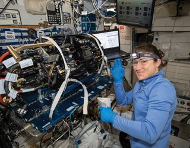

“We need to understand that if we all work on inclusion together
it’s going to be faster, broader, better, and more thorough than anything we can do on our own.”
-Ellen Pao
| NAME | What did they do? | Picture |
|---|---|---|
| Christina Koch | Working on board the International Space Station in December 2018 on her first spaceflight as part of Expedition 59, 60, and 61, Christina Koch broke the record for the longest single spaceflight by a woman set by former station commander Peggy Whitson. Koch achieved another historic milestone when she took part in the first all-female spacewalk in October 2019 with Jessica Meir. Koch graduated from North Carolina State University with a bachelor’s degree in electrical engineering and physics and a master’s degree in electrical engineering. |  |
| Katie Weimer | Katie Weimer is revolutionizing healthcare by combining powerful digital workflows with the ability to create templates, guides, instruments, and even implants using 3D-printing technologies. Weimer received her undergraduate degree in mechanical engineering as well as master’s degree in mechanical engineering from the University of Missouri, Kansas City. Originally with Medical Modeling, she moved over to 3D Systems when the company was acquired in 2013 and has taken on roles of increasing responsibility since then. | |
| Kate Gleason | At age 19, Kate Gleason became the first woman engineering student to enroll in the Mechanical Arts program at Cornell University, but her father's shop in Rochester soon came upon hard times. She was called home and never was able to return to complete the requirements for a degree. However, through training and self-learning she earned the title of engineer and is recognized for her considerable accomplishments. Some of her education came from courses at the Sibley College of Engraving and the Mechanics Institute, which became Rochester Institute of Technology. |